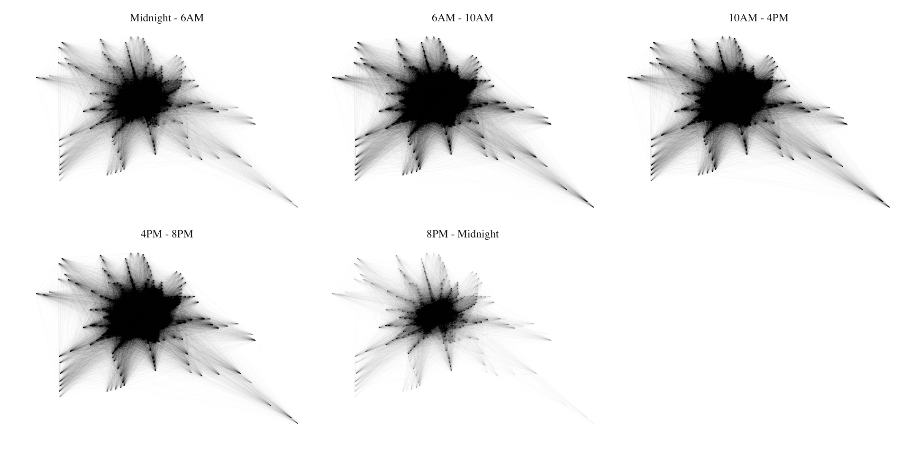
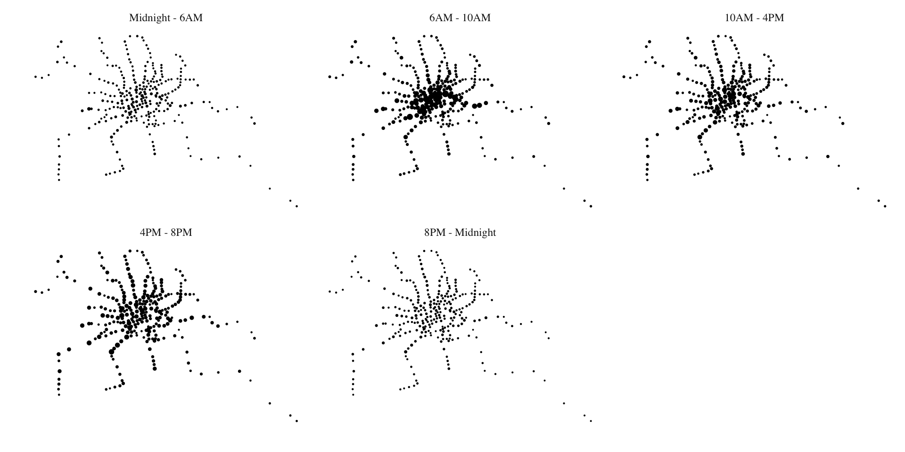
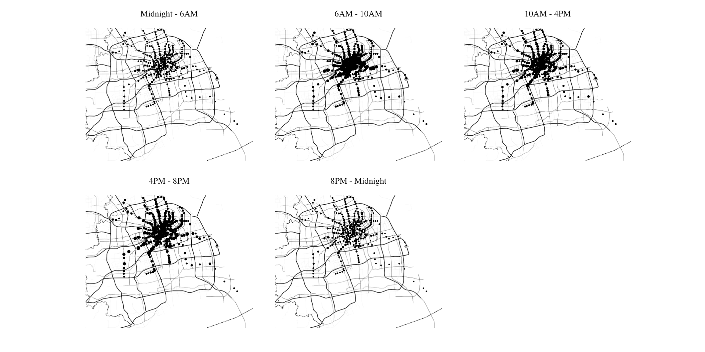
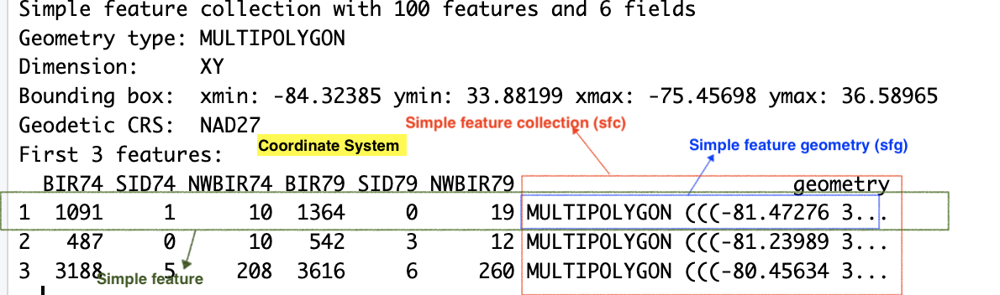
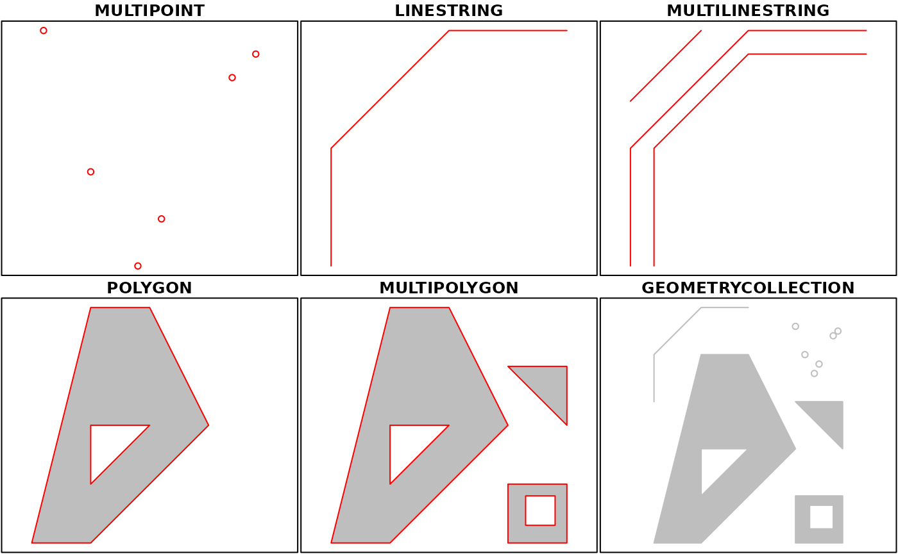
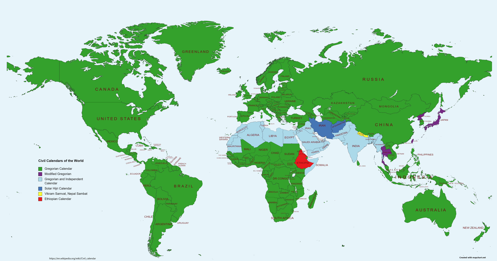
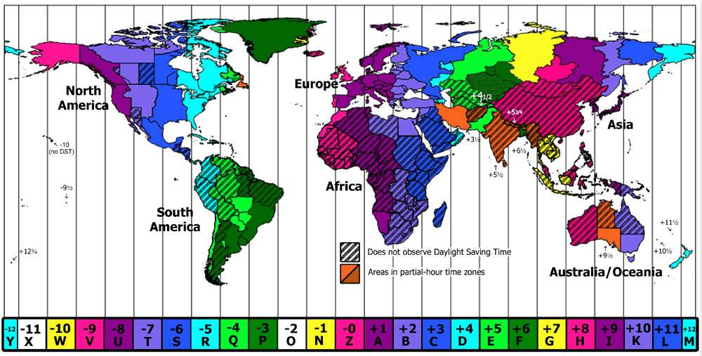

Spatial Data in R
Nikhil Kaza
5/4/23
Recap from last week
- Grammar of Graphics
- Aesthetics, Mapping & Geoms
- Scales
- Facetting
- Spatial is not special
Today’s plan
Spatial is just a data type (mostly…)
| CardID | tripid | station_name_D | station_name_O | lon_D | lon_O | lat_D | lat_O | dat_time_D | dat_time_O |
|---|---|---|---|---|---|---|---|---|---|
| 5690 | 1 | 宜山路 | 星中路 | 121.4226 | 121.3643 | 31.18858 | 31.16001 | 2015-04-01 12:12:06 | 2015-04-01 11:52:57 |
| 5690 | 2 | 星中路 | 宜山路 | 121.3643 | 121.4226 | 31.16001 | 31.18858 | 2015-04-01 18:39:48 | 2015-04-01 18:24:04 |
| 5951 | 1 | 南京东路 | 新村路 | 121.4801 | 121.4180 | 31.24006 | 31.26578 | 2015-04-01 14:55:19 | 2015-04-01 14:24:06 |
| 5951 | 2 | 新村路 | 南京东路 | 121.4180 | 121.4801 | 31.26578 | 31.24006 | 2015-04-01 16:21:04 | 2015-04-01 15:50:06 |
| 6032 | 1 | 锦绣路 | 广兰路 | 121.5357 | 121.6169 | 31.18973 | 31.21325 | 2015-04-01 14:42:53 | 2015-04-01 14:17:33 |
| 6032 | 2 | 广兰路 | 锦绣路 | 121.6169 | 121.5357 | 31.21325 | 31.18973 | 2015-04-01 15:34:24 | 2015-04-01 15:09:45 |
- Close to 4.4 million trips by
Spatial is just a data type (mostly…)
| CardID | tripid | station_name_D | station_name_O | lon_D | lon_O | lat_D | lat_O | dat_time_D | dat_time_O |
|---|---|---|---|---|---|---|---|---|---|
| 5690 | 1 | 宜山路 | 星中路 | 121.4226 | 121.3643 | 31.18858 | 31.16001 | 2015-04-01 12:12:06 | 2015-04-01 11:52:57 |
| 5690 | 2 | 星中路 | 宜山路 | 121.3643 | 121.4226 | 31.16001 | 31.18858 | 2015-04-01 18:39:48 | 2015-04-01 18:24:04 |
| 5951 | 1 | 南京东路 | 新村路 | 121.4801 | 121.4180 | 31.24006 | 31.26578 | 2015-04-01 14:55:19 | 2015-04-01 14:24:06 |
| 5951 | 2 | 新村路 | 南京东路 | 121.4180 | 121.4801 | 31.26578 | 31.24006 | 2015-04-01 16:21:04 | 2015-04-01 15:50:06 |
| 6032 | 1 | 锦绣路 | 广兰路 | 121.5357 | 121.6169 | 31.18973 | 31.21325 | 2015-04-01 14:42:53 | 2015-04-01 14:17:33 |
| 6032 | 2 | 广兰路 | 锦绣路 | 121.6169 | 121.5357 | 31.21325 | 31.18973 | 2015-04-01 15:34:24 | 2015-04-01 15:09:45 |
Visualising spatial data
Code
library(ggplot2)
library(ggthemes)
numtrips <- sm_tbl %>%
filter(station_name_O != station_name_D) %>%
mutate(hr = hour(dat_time_O),
time_of_day = hr %>% cut(breaks=c(0,6,10,16,20,24), include.lowest = TRUE, labels=c("Midnight - 6AM", "6AM - 10AM", "10AM - 4PM", "4PM - 8PM", "8PM - Midnight"))
) %>%
group_by(station_name_O, station_name_D, time_of_day) %>%
summarise(lon_O = first(lon_O),
lat_O = first(lat_O),
lon_D = first(lon_D),
lat_D = first(lat_D),
totaltrips = n()
)
numtrips %>%
ggplot()+
geom_segment(aes(x=lon_O, y=lat_O,xend=lon_D, yend=lat_D, alpha=totaltrips))+
#Here is the magic bit that sets line transparency - essential to make the plot readable
scale_alpha_continuous(range = c(0.005, 0.01), guide='none')+
facet_wrap(time_of_day~.)+
#Set black background, ditch axes
scale_x_continuous("", breaks=NULL)+
scale_y_continuous("", breaks=NULL) +
theme_tufte()
Visualising spatial data
Code
numtrips <- sm_tbl %>%
filter(station_name_O != station_name_D) %>%
mutate(hr = hour(dat_time_O),
time_of_day = hr %>% cut(breaks=c(0,6,10,16,20,24), include.lowest = TRUE, labels=c("Midnight - 6AM", "6AM - 10AM", "10AM - 4PM", "4PM - 8PM", "8PM - Midnight"))
) %>%
group_by(station_name_D, time_of_day) %>%
summarise(lon_D = first(lon_D),
lat_D = first(lat_D),
totaltrips = n()
)
numtrips %>%
ggplot()+
geom_point(aes(x=lon_D, y=lat_D, size=totaltrips))+
scale_size_continuous(range = c(0.01, 2), guide='none', trans = )+
facet_wrap(time_of_day~.)+
#Set black background, ditch axes
scale_x_continuous("", breaks=NULL)+
scale_y_continuous("", breaks=NULL) +
theme_tufte()+
labs(main = "Popularity of destination stations on Apr 1, 2015")
But basemaps provide context
Code
library(ggmap)
bbox <- c(left = 120.9892, bottom = 30.7151, right = 122.0228, top = 31.4177)
g1 <- get_stamenmap(bbox, zoom = 10, maptype = "toner-hybrid", color = "bw")
ggmap(g1)+
geom_point(aes(x=lon_D, y=lat_D, size=totaltrips), data = numtrips)+
scale_size_continuous(range = c(0.01, 2), guide='none', trans = )+
facet_wrap(time_of_day~.)+
#Set black background, ditch axes
scale_x_continuous("", breaks=NULL)+
scale_y_continuous("", breaks=NULL) +
theme_tufte()+
labs(main = "Popularity of destination stations on Apr 1, 2015")
Easier with tmap (but need to get serious)
Spatial with sf
 ## sf ecosystem
## sf ecosystem

sf: Objects with simple features

Geometry

Geometry is not that different from time


Promote a set of columns to a geometry column
| CardID | tripid | station_name_D | station_name_O | lon_O | lat_O | dat_time_D | dat_time_O | geometry |
|---|---|---|---|---|---|---|---|---|
| 5690 | 1 | 宜山路 | 星中路 | 121.3643 | 31.16001 | 2015-04-01 12:12:06 | 2015-04-01 11:52:57 | POINT (121.4226 31.18858) |
| 5690 | 2 | 星中路 | 宜山路 | 121.4226 | 31.18858 | 2015-04-01 18:39:48 | 2015-04-01 18:24:04 | POINT (121.3643 31.16001) |
| 5951 | 1 | 南京东路 | 新村路 | 121.4180 | 31.26578 | 2015-04-01 14:55:19 | 2015-04-01 14:24:06 | POINT (121.4801 31.24006) |
| 5951 | 2 | 新村路 | 南京东路 | 121.4801 | 31.24006 | 2015-04-01 16:21:04 | 2015-04-01 15:50:06 | POINT (121.418 31.26578) |
| 6032 | 1 | 锦绣路 | 广兰路 | 121.6169 | 31.21325 | 2015-04-01 14:42:53 | 2015-04-01 14:17:33 | POINT (121.5357 31.18973) |
| 6032 | 2 | 广兰路 | 锦绣路 | 121.5357 | 31.18973 | 2015-04-01 15:34:24 | 2015-04-01 15:09:45 | POINT (121.6169 31.21325) |
Be careful with sticky geometry
| station_name_O | geometry |
|---|---|
| 虹桥火车站 | POINT (121.4706 31.20117) |
| 鲁班路 | POINT (121.5686 31.25259) |
| 云山路 | POINT (121.4706 31.20117) |
| 鲁班路 | POINT (121.5776 31.25927) |
Multiple sets of columns are good candidates for geometry
| CardID | tripid | geometry | orig_geom |
|---|---|---|---|
| 5690 | 1 | POINT (121.4226 31.18858) | POINT (121.3643 31.16001) |
| 5690 | 2 | POINT (121.3643 31.16001) | POINT (121.4226 31.18858) |
| 5951 | 1 | POINT (121.4801 31.24006) | POINT (121.418 31.26578) |
| 5951 | 2 | POINT (121.418 31.26578) | POINT (121.4801 31.24006) |
| 6032 | 1 | POINT (121.5357 31.18973) | POINT (121.6169 31.21325) |
| 6032 | 2 | POINT (121.6169 31.21325) | POINT (121.5357 31.18973) |
Create new geometries
::: fragment ::: {style=“font-size: 0.45em”}
#| echo: false
scard_sf %>%
head(6) %>%
mutate(buffer_geom = st_buffer(orig_geom, .05)) %>%
select(CardID, orig_geom, buffer_geom) %>%
kable() %>%
kable_styling(bootstrap_options = "condensed") %>%
column_spec(3, background = 'green')| CardID | orig_geom | buffer_geom | geometry |
|---|---|---|---|
| 5690 | POINT (121.3643 31.16001) | POLYGON ((121.3643 31.16001... | POINT (121.4226 31.18858) |
| 5690 | POINT (121.4226 31.18858) | POLYGON ((121.4226 31.18858... | POINT (121.3643 31.16001) |
| 5951 | POINT (121.418 31.26578) | POLYGON ((121.418 31.26578,... | POINT (121.4801 31.24006) |
| 5951 | POINT (121.4801 31.24006) | POLYGON ((121.4801 31.24006... | POINT (121.418 31.26578) |
| 6032 | POINT (121.6169 31.21325) | POLYGON ((121.6169 31.21325... | POINT (121.5357 31.18973) |
| 6032 | POINT (121.5357 31.18973) | POLYGON ((121.5357 31.18973... | POINT (121.6169 31.21325) |
:::
A reminder that (only active) geometry is sticky
| station_name_D | dat_time_D | geometry |
|---|---|---|
| 宜山路 | 2015-04-01 12:12:06 | POINT (121.4226 31.18858) |
| 星中路 | 2015-04-01 18:39:48 | POINT (121.3643 31.16001) |
| 南京东路 | 2015-04-01 14:55:19 | POINT (121.4801 31.24006) |
| 新村路 | 2015-04-01 16:21:04 | POINT (121.418 31.26578) |
Use plyrs
| CardID | tripid | hr | time_of_day | geometry |
|---|---|---|---|---|
| 5690 | 1 | 11 | 10AM - 4PM | POINT (121.4226 31.18858) |
| 5690 | 2 | 18 | 4PM - 8PM | POINT (121.3643 31.16001) |
| 5951 | 1 | 14 | 10AM - 4PM | POINT (121.4801 31.24006) |
| 5951 | 2 | 15 | 10AM - 4PM | POINT (121.418 31.26578) |
| 6032 | 1 | 14 | 10AM - 4PM | POINT (121.5357 31.18973) |
| 6032 | 2 | 15 | 10AM - 4PM | POINT (121.6169 31.21325) |
… but worry about summarisation
Drop it!
| CardID | tripid | station_name_D | station_name_O | lon_O | lat_O | dat_time_D | dat_time_O | orig_geom |
|---|---|---|---|---|---|---|---|---|
| 5690 | 1 | 宜山路 | 星中路 | 121.3643 | 31.16001 | 2015-04-01 12:12:06 | 2015-04-01 11:52:57 | POINT (121.3643 31.16001) |
| 5690 | 2 | 星中路 | 宜山路 | 121.4226 | 31.18858 | 2015-04-01 18:39:48 | 2015-04-01 18:24:04 | POINT (121.4226 31.18858) |
| 5951 | 1 | 南京东路 | 新村路 | 121.4180 | 31.26578 | 2015-04-01 14:55:19 | 2015-04-01 14:24:06 | POINT (121.418 31.26578) |
| 5951 | 2 | 新村路 | 南京东路 | 121.4801 | 31.24006 | 2015-04-01 16:21:04 | 2015-04-01 15:50:06 | POINT (121.4801 31.24006) |
tmap again
#| code-fold: true
tmap_mode(“plot”)
numtrips <- sm_tbl %>% filter(station_name_O != station_name_D) %>% mutate(hr = hour(dat_time_O), time_of_day = hr %>% cut(breaks=c(0,6,10,16,20,24), include.lowest = TRUE, labels=c(“Midnight - 6AM”, “6AM - 10AM”, “10AM - 4PM”, “4PM - 8PM”, “8PM - Midnight”)) ) %>% group_by(station_name_D, time_of_day) %>% summarise(lon_D = first(lon_D), lat_D = first(lat_D), totaltrips = n() ) %>% st_as_sf(coords(lon_D, lat_D), crs=“4326”)
numtrips %>% tm_shape()+ tm_bubbles(size = “totaltrips”, col=“red”, style = ‘fixed’ )+ tm_facets(by = “time_of_day”)